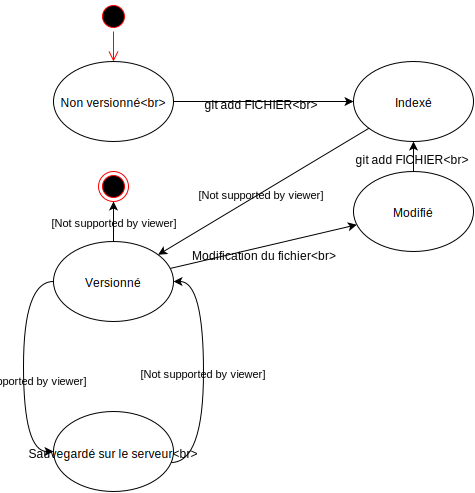

Préface
Ce document est inspiré du « Book » écrit par Scott Chacon et Ben Straub, publié chez Apress. Plusieurs des paragraphes sont copiés de la traduction française de cet ouvrage.
Avant de commencer
Qu'est-ce que gestion de version ?
Un système de gestion de version enretistre l'évolution d'un fichier au cours du temps. C'est-à-dire qu'il ne se contente pas de sauvegarder les fichiers d'un projet, il garde également toutes les anciennes versions de chacun de ses fichiers.
Avant cette technologie, il était nécessaire d'enregistrer séparément chaque version, de garder dans un dossier « archives » toutes les versions précédentes et surtout, de faire attention à ne pas écraser le mauvais fichier !
Que permet un gestionnaire de version ?
Dire qu'un VCS sert à garder les anciennes versions d'un projet ne serait qu'observer de loin un drapeau planté au sommet d'un iceberg. Les capacités de Git et de ses semblables sont bien plus étendues que ça et nous le verrons dans ce document. Les outils fournis par Git permettent par exemple de :
- Garder chaque version d'un logiciel, d'un document ou d'autres types de données.
- Travailler de manière collaborative sur le même fichier au même moment.
- Gérer automatiquement ou manuellement les conflits inhérents aux projets de groupe.
- Savoir qui a écrit une ligne donnée.
- Créer plusieurs versions du même projet et les maintenir de manière simultanée.
- Isoler une erreur introduite dans une version récente sans avoir à chercher dans les fichiers.
- …
Git, ça n'est pas un logiciel, c'est en fait un regroupement de presque 150 micro-logiciels, regroupés sous un seul nom. (Certains de ces logiciels ne sont que des raccourcis vers une séquence d'autres, mais il faut voir Git comme un couteau suisse, analogie d'ailleurs déjà reprise par ce site).
Types de VCS
Il existe deux types de gestionnaires de versions : les centralisés et les distribués. Voici leurs différences :
VCS centralisé
Dans l'historique des systèmes de gestion de version, CVS et SVN (les « ancêtres » de Git) étaient centralisés. C'est-à-dire que leurs données se trouvaient sur un serveur et que des clients pouvaient aller y piocher une version définie. Le serveur s'occupait de gérer tous les conflits et les différentes versions.
VCS distribué
Les systèmes de gestion de version plus récent, tels que Git ou Mercurial, sont distribués. C'est-à-dire que l'historique des versions et toutes les données inhérentes au projet se trouvent sur la machine de travail. Lorsqu'il y a synchronisation, tout l'historique est transféré dans un sens ou dans l'autre.
Avantages et inconvénients
| Type de VCS | Avantage | Inconvénient |
|---|---|---|
| Centralisé | Peu de place sur le poste de travail | Nécessite une connexion pour la synchronisation |
| Distribué | Redondant, perte de données pratiquement impossible | Génère un historique tentaculaire, difficile à maintenir |
Installation
L'installation de Git est très simple pour les trois plateformes principales.
Sous Linux
Git se trouve dans la majorité des gestionnaires de paquets et est installé de base sur bon nombre de distributions. C'est normal, les concepteurs de Git sont les mêmes que ceux de Linux et ce système d'exploitation est lui-même versionné grâce à Git.
Il est recommandé d'installer Git (outil en ligne de commandes), Git GUI (interface graphique) et gitk (visualisateur d'historique). Optionnellement, un comparateur peut être installé. Le comparateur est utile pour la gestion de conflits, mais ne nous perdons pas dans ces préoccupations pour l'instant.
L'installation se fait en ligne de commande grâce à votre outil favori :
- Debian/Ubuntu :
# apt install git git-gui gitk - RedHat/Fedora :
# dnf install git git-gui gitk - …
Sous Windows
L'installation se fait grâce à un installeur situé sur la page de téléchargement du site officiel. L'installation par défaut offre toutes les fonctionnalités nécessaire à l'utilisation de Git.
Sous Mac
Comme pour Windows
Fonctionnalités de base
Nous l'avons déjà vu, Git est un outil très puissant. En tant qu'utilisateur occasionnel, il est souvent fréquent de n'utiliser qu'une infime partie de Git. Voici ces parties indispensables.
États des fichiers
Lors d'une utilisation normal de Git, les fichiers se trouvent dans plusieurs états successifs présentés ci-dessous.
